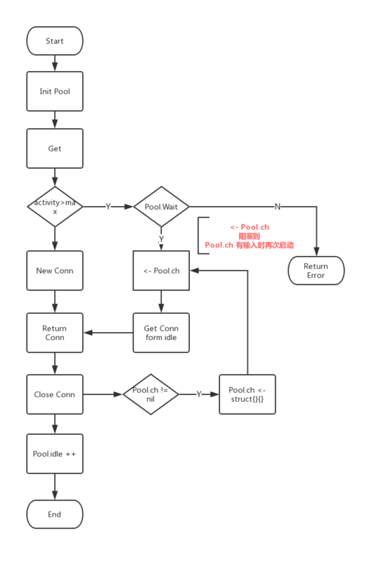

连接池一直是系统设计中很重要的一个话题，其主要的作用是复用系统中已经创建好的连接，避免重复创建连接加重系统负荷，下面看一下golang中redigo中连接池的使用和原理。
使用示例
首先看下redigo中连接池的使用
1 | package main |
我们可以看到Redigo使用连接池还是很简单的步骤：
- 创建连接池
- 简单设置连接池的最大连接数等参数
- 注入拨号函数（设置redis地址 端口号等）
- 调用pool.Get() 获取连接
- 使用连接Do函数请求redis
- 关闭连接
源码分析
首先看下连接池对象Pool的定义1
2
3
4
5
6
7
8
9
10
11
12
13
14
15
16
17
18
19
20
21
22
23
24
25
26
27
28
29
30
31
32
33
34
35
36
37
38
39
40
41
42
43
44
45
46
47
48
49
50
51
52
53
54
55
56
57
58
59
60
61
62
63
64
65
66
67type Pool struct {
// Dial is an application supplied function for creating and configuring a
// connection.
//
// The connection returned from Dial must not be in a special state
// (subscribed to pubsub channel, transaction started, ...).
// 拨号函数，从外部注入
Dial func() (Conn, error)
// DialContext is an application supplied function for creating and configuring a
// connection with the given context.
//
// The connection returned from Dial must not be in a special state
// (subscribed to pubsub channel, transaction started, ...).
DialContext func(ctx context.Context) (Conn, error)
// TestOnBorrow is an optional application supplied function for checking
// the health of an idle connection before the connection is used again by
// the application. Argument t is the time that the connection was returned
// to the pool. If the function returns an error, then the connection is
// closed.
// 检测连接的可用性，从外部注入。如果返回error，则直接关闭连接。
TestOnBorrow func(c Conn, t time.Time) error
// Maximum number of idle connections in the pool.
// 最大闲置连接数量
MaxIdle int
// Maximum number of connections allocated by the pool at a given time.
// When zero, there is no limit on the number of connections in the pool.
// 最大活动连接数
MaxActive int
// Close connections after remaining idle for this duration. If the value
// is zero, then idle connections are not closed. Applications should set
// the timeout to a value less than the server's timeout.
// 闲置过期时间，在get函数中会有逻辑，删除过期的连接
IdleTimeout time.Duration
// If Wait is true and the pool is at the MaxActive limit, then Get() waits
// for a connection to be returned to the pool before returning.
// 设置如果活动连接达到上限 再获取时候是等待还是返回错误
// 如果是false 系统会返回redigo: connection pool exhausted
// 如果是true 会利用p 的ch 属性让线程等待，直到有连接释放出来
Wait bool
// Close connections older than this duration. If the value is zero, then
// the pool does not close connections based on age.
// 连接最长生存时间 如果超过时间会被从链表中删除
MaxConnLifetime time.Duration
// 判断ch 是否被初始化了
chInitialized uint32 // set to 1 when field ch is initialized
// 锁，这块也给出了以后使用锁的时候一些经验，锁尽量要在某个对象的内部，并且指明哪些变量会用到该锁。
mu sync.Mutex // mu protects the following fields
closed bool // set to true when the pool is closed.
active int // the number of open connections in the pool
// 当p.Wait为true的时候，利用此channel实现阻塞
ch chan struct{} // limits open connections when p.Wait is true
// 存放闲置连接的链表
idle idleList // idle connections
// 等待获取连接的数量
waitCount int64 // total number of connections waited for.
waitDuration time.Duration // total time waited for new connections.
}
我们可以看到，其中有几个关键性的字段比如最大活动连接数、最大闲置连接数、闲置链接过期时间、连接生存时间等。
我们知道 连接池最重要的就是两个方法，一个是获取连接，一个是关闭连接。我们来看一下代码：
Get源码
1 | // get prunes stale connections and returns a connection from the idle list or |
下面是lazyInit的源码，跟单例模式中的懒加载模式是一样的。这里叫Fast Path 和 Slow Path。1
2
3
4
5
6
7
8
9
10
11
12
13
14
15
16
17
18
19
20
21
22func (p *Pool) lazyInit() {
// Fast path.
if atomic.LoadUint32(&p.chInitialized) == 1 {
return
}
// Slow path.
p.mu.Lock()
if p.chInitialized == 0 {
p.ch = make(chan struct{}, p.MaxActive)
if p.closed {
close(p.ch)
} else {
// 有多少个最大连接数，则初始化多少个channel
for i := 0; i < p.MaxActive; i++ {
p.ch <- struct{}{}
}
}
// 这里用到了atomic包中的原子操作
atomic.StoreUint32(&p.chInitialized, 1)
}
p.mu.Unlock()
}
Close方法和put源码
1 | func (ac *activeConn) Close() error { |
总结
整个Pool整体流程，我大概画了一个图。
从初始化 =》获取 -》创建连接 =》返回连接 =》关闭连接 =》
其中还有一条线是Pool.Wait = true 会一直阻塞 一直到有连接Close 释放活动连接数 线程被唤醒返回闲置的连接
其实大部分的连接池都是类似的流程，比如goroutine，redis。
